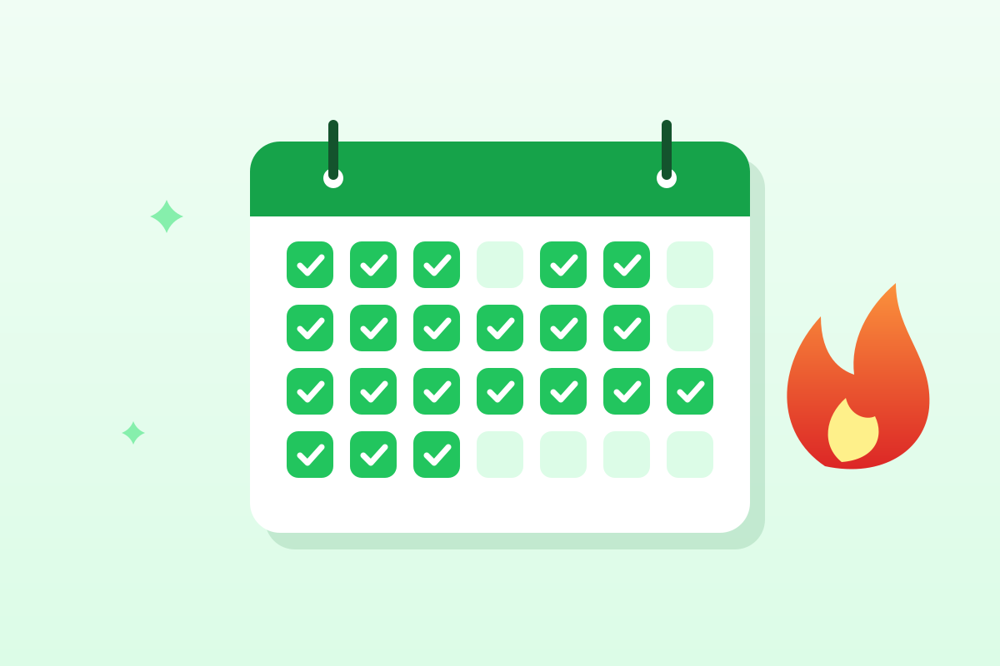

Привычки, которые остаются
Силы воли хватает на пару недель, а привычка работает годами. Хорошая новость: привычки складываются по понятным правилам, и их можно выстроить осознанно. Внизу — трекер, чтобы отмечать прогресс каждый день.

Как рождается привычка
Привычка — это действие, которое запускается почти автоматически в ответ на знакомую ситуацию. Мы не решаем каждый раз заново, чистить ли зубы, — просто чистим после завтрака. Цепочка простая: сигнал → действие → награда. Чем чаще действие повторяется в одной и той же ситуации, тем меньше усилий оно требует.
Сколько времени нужно
Популярное правило «21 дня» не подтверждается. В известном исследовании Университетского колледжа Лондона действие становилось автоматическим в среднем за 66 дней, а разброс у разных людей составлял от 18 до 254 дней. Простые привычки, например стакан воды за завтраком, закреплялись быстрее, сложные — вроде пробежки — дольше.
Шесть правил прочной привычки
- Начните смешно мало. Не «час спорта в день», а «одно отжимание». Маленький шаг легко сделать даже в плохой день, а дальше он сам будет расти.
- Привяжите к якорю. Выберите действие, которое вы уже делаете каждый день, и поставьте новую привычку сразу после него: «после того как налью утренний чай — выпью стакан воды».
- Составьте план «если — то». «Если в обед идёт дождь, то вместо прогулки поднимусь по лестнице на пять этажей». Заранее продуманные запасные варианты заметно повышают шансы довести дело до конца.
- Сделайте нужное удобным. Положите кроссовки у двери, а фрукты — на видное место. И наоборот: уберите подальше то, от чего хотите отказаться.
- Отмечайте прогресс. Видимая цепочка отметок мотивирует не прерывать её. Для этого и нужен трекер ниже.
- Хвалите себя сразу. Мозг закрепляет то, что приносит удовольствие здесь и сейчас. Короткое «отлично!» после действия — тоже награда.
Трекер привычек
Мои привычки на сегодня
Отметки хранятся только в вашем браузере и никуда не отправляются. Кружок показывает, сколько привычек выполнено в этот день.
Идеи маленьких привычек
| Якорь | Новая привычка |
|---|---|
| Проснулся | Открыть шторы и выпить стакан воды |
| Почистил зубы | 10 приседаний |
| Сел за работу | Записать три главных дела дня |
| Пообедал | 10 минут прогулки |
| Пришёл домой | Положить телефон на зарядку в прихожей |
| Лёг в кровать | Вспомнить три хороших события дня |
Если не получается
- Уменьшите шаг. Не выходит 20 минут — делайте 5. Регулярность важнее объёма.
- Смените якорь. Возможно, выбранный момент дня слишком суетливый.
- Не берите всё сразу. Одна-две новые привычки за раз — реалистичный максимум.
- Найдите компанию. Общая цель с другом или семьёй дисциплинирует лучше любого приложения.
Источники
- Lally P. et al. How are habits formed: modelling habit formation in the real world. European Journal of Social Psychology (2010)
- Gardner B., Lally P., Wardle J. Making health habitual: the psychology of «habit-formation» and general practice (2012)
- Gollwitzer P. M., Sheeran P. Implementation intentions and goal achievement: a meta-analysis (2006)